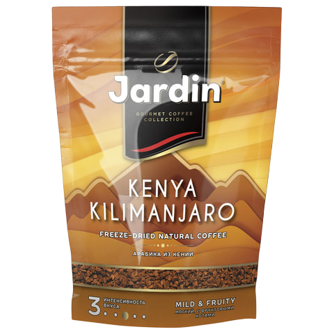

Кения АА (Kenya AA)

* Нажмите на изображение для просмотра в полном размере
Описание
Кения АА — это эталон яркого и сложного африканского кофе. Маркировка "АА" обозначает самый крупный калибр зерен, что гарантирует насыщенный вкус. Кенийский кофе славится своей интенсивной фруктовой кислинкой, напоминающей темные ягоды и цитрусы, а также плотным телом и долгим, сладким послевкусием. Это выбор для настоящих гурманов, ищущих необычные вкусовые сочетания.
Характеристики:
- Страна: Кения
- Регион: Ньери (Nyeri), склоны горы Кения
- Классификация: AA (крупное зерно, 7.2 мм)
- Разновидность: SL-28, SL-34
- Обработка: Мытая (Washed) с двойной ферментацией
- Высота произрастания: 1600 - 2100 м
- Вкусовой профиль: Черная смородина, грейпфрут, томат, вино
- Обжарка: Светлая/Средне-светлая (для сохранения фруктовых нот)